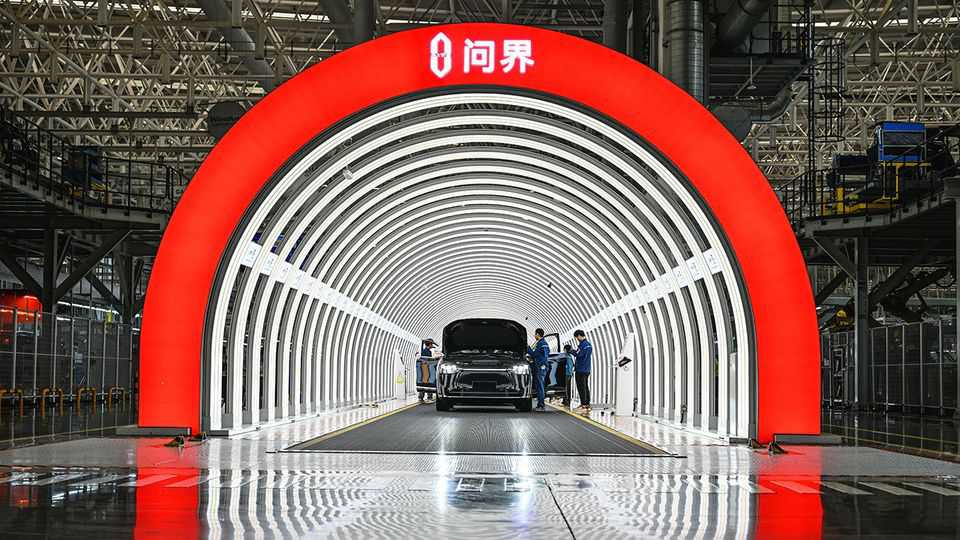

Strange new EV-makers keep appearing in China
If you can make a robo-vacuum, you can make a car
June 25th 2026

Next year Dreame, a Chinese business better known for its robo-vacuums, plans to start selling sleek electric vehicles (EVs). It is not the only firm branching out from small household appliances to machines that can carry an entire household. Rox Motor, which started selling electric SUVs in 2023, was also founded by a vacuum tycoon. Xiaomi, which made its name producing cheap smartphones (and also makes vacuums, among other things), began selling sports cars a year later.
Perhaps more surprising is that there are new entrants to the crowded Chinese EV market at all. No fewer than 143 EV brands sold at least one car last year. But 46 of them did not sell more than 1,000, according to AlixPartners, an advisory firm. Even so, 23 new EV brands were launched while just nine were halted.
Admittedly, lots of these are “sub-brands”, created by big companies to differentiate their high-end rides from mass-market models. Geely, China’s third-largest carmaker by sales, has a portfolio of more than ten brands, including Zeekr, Polestar and Lynk & Co.
Only ten Chinese companies managed to sell at least 1m cars apiece in 2025, accounting for 84% of the total. However, that share was down slightly from the year before, suggesting that the consolidation of China’s EV market that industry insiders have long predicted is yet to take place. Only occasionally does an entire company collapse. Hozon Auto, which made the Neta EV brand, is in the process of doing so. It suddenly stopped paying many of its employees last year and attracted headlines when angry staff cornered the founder at his Shanghai office demanding their wages.
Still, things look rather bleak for the industry in 2026. Overall car sales in China have been falling swiftly. In April they were down by a fifth from a year earlier, marking the seventh straight month of decline. The central government has criticised EV-makers for engaging in a vicious price war since 2023. Prices started rising in May, suggesting that the industry may have started listening to the state. But BYD, the world’s largest EV-maker, attributes this instead to rising costs for components such as chips and batteries, which may mean margins remain under pressure.
As demand falls and prices rise at home, China’s carmakers will become even more reliant on foreign sales, which are advancing in leaps and bounds. In April they were up 80% year on year. Setting up foreign distribution networks is costly and time-consuming. But as pressure on the industry continues to intensify, foreign sales, which tend to have higher margins, will make all the difference. China’s EV-makers are eager to hoover them up.■
To track the trends shaping commerce, industry and technology, sign up to “The Bottom Line”, our weekly subscriber-only newsletter on global business.